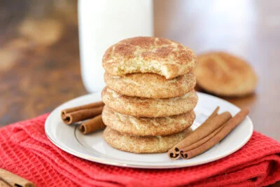

Snickerdoodle

Description
These classic snickerdoodles are soft, chewy, and coated in cinnamon sugar making
them simple, nostalgic, and absolutely perfect every time!
Ingredients
Cookie
- 2 3/4 cups all-purpose flour
- 2 tsp cream of tartar
- 1 tsp baking soda
- 1/2 tsp salt
- 1 cup unsalted butter, just softened
- 1 1/2 cups sugar
- 2 eggs
- 1 tsp vanilla extract
Cinnamon Sugar Coating
- 1/3 cup sugar
- 2 tbsp cinnamon
Steps
- Preheat oven to 350°F.
- In a large bowl, mix flour, cream of tartar, baking soda, and salt. Set
aside.
- In a stand mixer, cream together butter (barely softened) and sugar. Add
eggs and vanilla and blend well.
- Add dry ingredients to wet ingredients and mix well.
- In a small bowl, combine ⅓ cup sugar and 2 tablespoons cinnamon.
- Use a small cookie scoop to scoop out dough and roll it into a ball. Roll
each ball in the cinnamon sugar mixture – twice.
- Place 2 inches apart on an ungreased cookie sheet.
- Bake for 8-10 minutes. Let sit on the cookie sheet for a few additional
minutes before removing to a wire rack to cool.